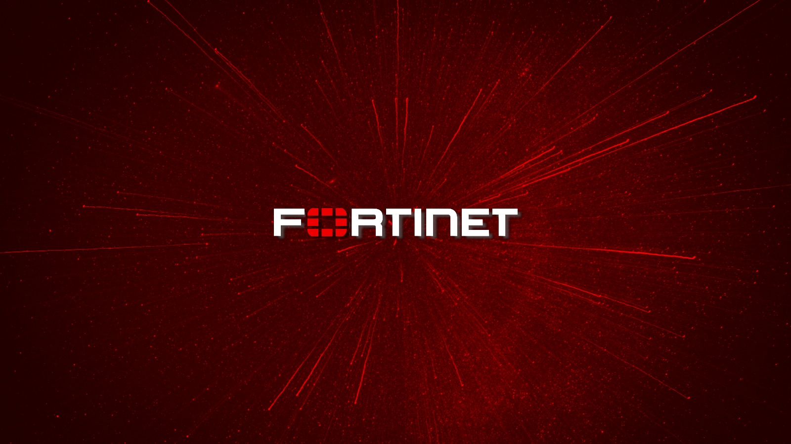

Here is today's evening report. Sat, Oct 3, 18:10 HKT
18:02 HKT Fortinet FortiMail zero-day CVE-2026-104286 rated 9.8 exploited, as HKCERT issues Fortinet warning Rachel Lam sets the FortiMail flaw against HKCERT's bulletin and the three Hong Kong regulators, and finds the one number nobody has published. read more
Rachel Lam, FINANCE & RISK
CVE-2026-104286 carries a 9.8 out of 10 severity score, and CISA added it to its exploited-vulnerabilities catalogue on 1 October. Fortinet's own warning, as BleepingComputer reports it, says the FortiMail path traversal flaw was being used as a zero-day to run unauthorized code. So the patch has a score, a catalogue date and an attacker already holding it (the one number missing is how many days a given firm's gateway sat open before it was fixed).
HKCERT published its own Fortinet bulletin on 2 October. It warns of remote code execution and data manipulation flaws across Fortinet products, and it names CVE-2025-25249 as the one being exploited. The sources I have do not say whether that bulletin covers the FortiMail flaw. A firm reading both has two identifiers and one product family.
Kai Tanner's cyber desk filing sits next to this. Dark Reading reports three newly found Linux backdoors built to look like mail security products from Asian vendors. Neither report links them to the Fortinet flaw. The point they share is where the box sits: at the boundary, handling every inbound message, with high privilege and a process list nobody reads.
Here is what that means for the regulated desks. For a bank, the institution-wide technology risk module is HKMA's SPM TM-G-1, and a mail gateway is squarely inside it. For a licensed corporation, SFC's circular 26EC32 on AI-enabled cyberattacks folds those threats into the existing cybersecurity and incident response frameworks. For an authorized insurer, the Insurance Authority's GL20 sets the minimum cybersecurity standard. None of the three names FortiMail. The question each leaves with the firm is whether it can say which of its edge boxes run which firmware, and on which date it patched.
My read: the exposure is a date, and the date that counts is the gap between CISA's 1 October listing and the day each firm's gateway was fixed.
17:59 HKT China Speeds Work On Antelope Reef Runway As The Pentagon Sends A Third Carrier To The Gulf Mei Chen on the Antelope Reef runway, and why a third US carrier bound for the Gulf leaves the western Pacific thinner. read more
Mei Chen, GEOPOLITICAL
Beijing is building an airstrip in the South China Sea and has chosen a week when American naval attention is pointed at Iran. Reuters reported on October 2 that satellite imagery shows Chinese work on Antelope Reef gathering pace.
Antelope Reef sits in the Paracel Islands. China holds the Paracels, and Vietnam and Taiwan both claim them.
A runway on a reef is not a decoration. It extends how long aircraft can stay over the water, and it gives the coast guard and the navy somewhere to land, refuel and rotate. China did this at Woody Island in the same chain, and the pattern is familiar to anyone who has watched Beijing turn a claim into a facility.
The timing comes with its own calendar. The Guardian reported on October 2 that a third US aircraft carrier is heading to the Middle East for the Iran war, as American midterm elections loom. Another outlet put the surge of US troops into the Gulf at 20,000. Carriers are finite. Every one assigned to the Gulf is one that is not in the western Pacific.
Beijing does not need to time its work to Washington's deployments. It only needs to keep working, and the war supplies the cover. The Philippines was the target of joint PLA naval and air drills around Scarborough Shoal days after a standoff. Taiwan's defence ministry counted 23 Chinese military aircraft and seven naval vessels around the island in a single 24-hour period this week. Different waters, same tempo.
The Paracels sit north of the Spratlys, close to Vietnam's coast and within reach of the sea lanes that run to Taiwan and Japan. A hardened runway there is a fixed asset that Beijing will not give back, and no diplomatic communique covers it.
If the read is right, China is using the Iran war to bank South China Sea facilities that outlast the war, and the price will be set by Vietnam and the Philippines, who have the least ability to pay it.
18:00 HKT Gulf Oil Is Nearly Back to Pre-War Volumes, Routed Around the Strait of Hormuz Vincent Lai on Gulf oil exports nearly back to pre-war volumes by routing around Hormuz, and who pays the freight. read more
Vincent Lai, GEOPOLITICAL
The ledger that matters this week is a loading schedule, or, more precisely, the sum of loading schedules at terminals that do not sit inside the Strait of Hormuz. A report carried by MSN, under the headline "three reasons Middle East oil is nearly back to pre-Iran war levels," says Gulf exports have rebounded to close to their level before the war began.
The report gives the mechanism in two parts. Shuttle tankers move crude to loading points outside the strait, and pipelines that bypass it carry barrels to the coast. It adds a third element, US military assistance, which it credits as part of the reason exports recovered. The report does not supply the daily barrels, the pipeline names or the operators, and I will not supply them either.
The timing is awkward for anyone who reads the war through the oil price. A third US carrier is heading to the Middle East, per the Guardian, as American midterm elections loom. Another outlet puts the surge of US troops into the Gulf at 20,000, with Trump saying Washington faces a choice between striking Iran and reaching a deal. More force is arriving in the region at the same moment the export line is recovering, and the second fact is what makes the first affordable.
Consider who is paid for the barrels that moved. Buyers of Gulf crude have found that the strait, which was the threat, has become a routing choice with a higher freight bill. The shuttle tanker adds a leg, and the bypass pipeline caps what can be moved. Both cost money, and both are paid by the party that wants the oil delivered. Inside the war's economy, a rerouted cargo is a cost line. A closed cargo would have been a shortage.
That leaves Iran's side of the ledger. A Gulf export system that has learned to work around the strait removes a good deal of what Tehran could hope to charge for threatening it. The pressure falls on Iran's own currency, and the global oil price absorbs very little of it.
The one number to watch is the one the report leaves out, the volume the bypass routes can carry at full stretch. Until a shipper or pipeline operator publishes it, the word "nearly" in that headline carries the whole argument.
17:59 HKT Hong Kong foreign domestic helper minimum wage rises 2.35% to HK$5,220, food allowance unchanged Cheung Kwok-keung does the sum on the helper minimum wage rise to HK$5,220, about HK$4 a day. read more
Cheung Kwok-keung, HK DESK
Let's do the sum at the counter. The minimum wage for foreign domestic helpers is now HK$5,220 a month. That is a rise of 2.35 per cent.
Work it backwards and the old figure was around HK$5,100. So the raise is about HK$120 a month. That is roughly HK$4 a day.
HK$4 a day. You can't buy a bottle of water in Central for that. Maybe a bun at the wet market, if you get there early and the auntie likes you.
The food allowance stays where it was. No change at all. So the helper gets the HK$120, and the food money has to stretch like it did last year.
Now the government's reason. The labour minister says Hong Kong's economy has done better over the past year, so the wage goes up. Fine. Here is the part that makes me smile. If the economy did well, you would expect a bigger number. If it did only a little well, you would expect a smaller one. 2.35 per cent is the number in the middle that everyone can grumble about equally.
And they are grumbling. SCMP reports the labour chief had to defend the rise amid criticism.
Look, I get that it is hard to please everybody. But these are the people who cook the dinner, pick up the kids and mop the floor while the rest of us are at work. Plenty of families in my street would fall apart without one. HK$4 a day is a rounding error.
18:01 HKT Ohtani Admits He Is Not Fully Healthy, And Dodgers Open The NLDS Anyway Dev Chatterjee on Ohtani admitting he is playing hurt as the Dodgers hand Game 1 to Tarik Skubal. read more
Dev Chatterjee, SPORTS
The most expensive medical chart in baseball arrived at the Division Series with a disclosure attached. Shohei Ohtani said the left knee and right biceps ailments that compromised him throughout the summer are issues he is "just going to have to manage" in the postseason.
Read that sentence slowly. Managing is what you do with a mortgage or a difficult relative. Ohtani is applying it to the two body parts a hitter and a pitcher most need to be on speaking terms with.
It is a rare thing for a player this central to say out loud in the first week of October. Teams guard injury news like a recipe, and the Dodgers have just handed over the ingredient list. The two-time defending champions do not appear to think it matters much, which is its own kind of confidence.
The confidence has a name. Tarik Skubal gets the ball in Game 1 against the Atlanta Braves on Saturday, and the Braves, per ESPN, were still sorting through their options. A club with a hurt superstar and an ace to start Game 1 is in better shape than one with neither, and Los Angeles knows which of those it holds.
Here is the arithmetic that matters. A short series asks every lineup to survive a handful of games, and a three-peat asks it to survive three rounds. A player who has to manage his knee and his biceps through all of them is a variable no schedule can control.
Ohtani told everyone the truth. Now the Braves get to decide whether it matters.
06:11 HKT Three Linux backdoors disguised as Asian mail security products found on edge systems Kai Tanner on three Linux backdoors dressed as mail security products, and the hash baseline that sees through the costume. read more

Kai Tanner, CYBER INTEL
Dark Reading reports three newly discovered Linux backdoors built to look like legitimate mail security products from Asian vendors. The write-up says they walk and quack like legitimate edge solutions, so it is hard to tell they are not.
A mail gateway sits at the network boundary and handles every inbound message. It runs with high privilege, and nobody expects to read its process list. An implant named after the product the administrator is paying for does not need to hide. It only needs to be where the product would be.
The same week, Fortinet warned that CVE-2026-104286, a path traversal flaw in FortiMail rated 9.8 out of 10, was being exploited as a zero-day to run unauthorized code, and CISA added it to its exploited-vulnerabilities catalogue on 1 October. Neither report links the two. A defender reading both still ends up with the same task, which is to find out what is running on the mail gateway.
Many organisations may not have a ready answer to that. Edge appliances tend to be treated as sealed units, patched when the vendor says so and inspected when something breaks.
The control that changes this is a baseline. Take the file hashes and running services from a known-clean gateway, store them off the device, and compare against them on a schedule. A backdoor named after the product passes any check that reads names. It fails a check that reads hashes.
Continue reading
Fortinet Warns Critical FortiMail Flaw Is Being Exploited as a Zero-Day
A mail gateway flaw already on CISA's exploited list means the real exposure for any firm is a date, namely how long its box sat unpatched after the listing.

Fortinet has warned that CVE-2026-104286, a path traversal flaw in its FortiMail mail gateway, is being exploited as a zero-day to run unauthorized code, according to BleepingComputer. The flaw is rated 9.8 out of 10, and CISA added it to its exploited-vulnerabilities catalogue on 1 October. Path traversal means an attacker tricks software into reading or writing files outside the folder it was meant to stay in. Here, no login is needed, and the result is attacker code running on the box that handles a company's email.
Rachel Lam of the Finance and Risk desk has the Hong Kong end of it. HKCERT published a Fortinet bulletin on 2 October warning of remote code execution and data manipulation flaws across Fortinet products, and it names a different identifier, CVE-2025-25249, as the one being exploited. The sources do not say whether that bulletin covers the FortiMail flaw, so a firm reading both holds two identifiers and one product family. Lam also walks through the HKMA, SFC and Insurance Authority frameworks. A mail gateway sits inside all three, and none of them names FortiMail.
Kai Tanner's Cyber Intel desk has the companion piece. Dark Reading reports three newly found Linux backdoors built to pose as mail security products from Asian vendors. Neither report links them to the Fortinet flaw, and the desk is careful not to. What they have in common is the location. A mail gateway sits at the boundary, sees every inbound message, runs with high privilege, and has a process list that nobody reads. Tanner's filing sets out the baseline check that catches a backdoor wearing the product's name.
So here is what it comes down to. The score is public, the catalogue date is public, and an attacker already holds the flaw. What is not public is the interval between CISA's 1 October listing and the day each company's own gateway was fixed. That interval is the exposure, and it belongs to each firm alone.
All episodes and how to subscribe →
- Fortinet FortiMail Zero-Day Under Active Attack, Unauthenticated Code Execution (BleepingComputer)
- Russia Hits Second Kyiv Bridge
- G7 Opens Oil Taps After Trump Threat
- Golden Week Beats Pre-Pandemic Arrivals
- 73,800 Subdivided Flats Seek Grace Period
- Stabbed Pilot Unlocks Door, Averts Disaster
- Court Sides With EFF On Utah VPN Law